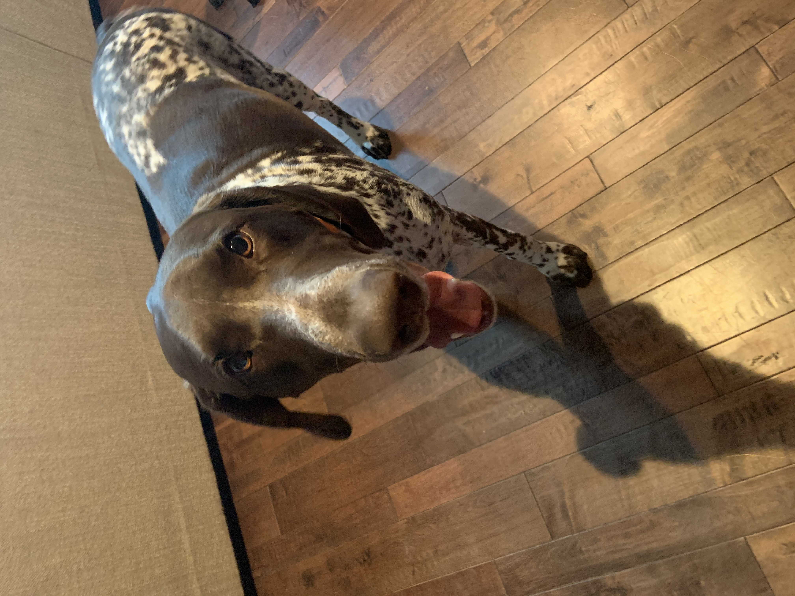

All About Kobe

Name:
Kobe
Type:
Dog
Age:
3
Gender:
Male
Personality:
Lazy
Breed:
German Shorthaired Pointer
Description :
Kobe is the type of the pet who LOVES to cuddle. Sometimes
he forgets how big he is, and he will lay all out on you. Don't cuddle for too long
because Kobe likes to get his energy out. His favorite game to play is Tug-of-War. He
also likes to play fight. Just be careful to not leave your socks laying around the house
because he loves those!